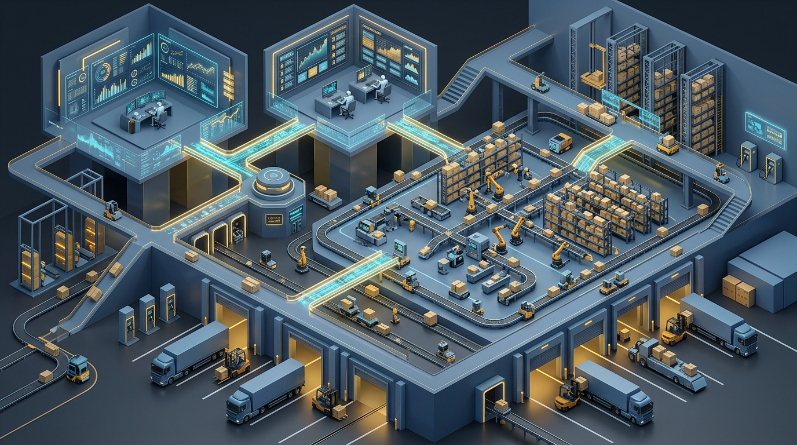

Dari Rantai Pasok Statis Menuju Ekosistem Otonom Berbasis Agen
Manajemen rantai pasok modern menghadapi era volatilitas tertinggi dalam sejarah perdagangan global. Disrupsi jalur pelayaran lintas benua, cuaca ekstrem, fluktuasi geopolitik, hingga ketidakpastian permintaan pasar konsumen menelanjangi kelemahan mendasar dari perangkat lunak Enterprise Resource Planning (ERP) dan manajemen transportasi konvensional.
Selama beberapa dekade, perusahaan mengandalkan otomatisasi berbasis aturan kaku (rule-based automation) atau perangkat Robotic Process Automation (RPA) sederhana. Ketika terjadi kondisi yang menyimpang dari skenario yang telah diprogram—seperti pelabuhan transit yang ditutup tiba-tiba atau pemasok utama yang mengalami kelangkaan bahan baku—sistem konvensional hanya mampu membunyikan peringatan pasif (alerts), memaksa para manajer rantai pasok menghabiskan waktu berhari-hari dalam rapat darurat untuk mencari solusi alternatif secara manual.
Sebagaimana telah dibahas dalam analisis Transformasi Lanskap Kecerdasan Artifisial, lompatan produktivitas sejati hanya tercapai ketika teknologi cerdas mampu merombak alur kerja secara mendasar. Dalam domain operasional logistik, perombakan ini dimotori oleh transisi dari AI percakapan menuju Autonomous AI Agents.
Berbeda dengan otomatisasi deterministik, agen AI memiliki tiga kapabilitas kognitif mutakhir: kemampuan mempersepsikan perubahan lingkungan data secara dinamis (context perception), melakukan penalaran multi-langkah (multi-step reasoning), dan mengeksekusi aksi nyata melintasi batas-batas sistem pergudangan (Warehouse Management System / WMS), transportasi (Transportation Management System / TMS), serta pengadaan korporat.
Arsitektur Multi-Agent Systems (MAS) dalam Operasional Logistik
Operasional rantai pasok berskala enterprise mustahil dikendalikan oleh satu agen monolitik raksasa. Rantai pasok terdiri dari entitas-entitas yang memiliki tujuan berbeda dan kerap saling bertentangan: tim pengadaan menginginkan harga pembelian serendah mungkin dengan memesan dalam volume besar, sementara tim pergudangan menginginkan persediaan seminimal mungkin demi memangkas biaya simpan modal kerja.
Oleh karena itu, arsitektur terbaik dibangun menggunakan ekosistem Multi-Agent Systems (MAS) yang terdesentralisasi namun terkoordinasi secara cerdas.
1. Taksonomi Peran Agen Spesialis
Dalam kerangka kerja multi-agen logistik, setiap agen diberikan fokus domain fungsional yang spesifik:
- Procurement Agent (Agen Pengadaan): Memantau fluktuasi harga bahan baku di bursa komoditas dan katalog vendor. Ketika stok mendekati batas pemesanan ulang (reorder point), agen ini secara otonom menerbitkan permintaan penawaran (Request for Quotation / RFQ), mengevaluasi proposal harga pemasok, dan menegosiasikan diskon volume berdasarkan batas toleransi yang ditetapkan manajemen.
- Inventory Optimizer Agent (Agen Optimasi Persediaan): Menghitung ukuran stok penyangga (buffer stock) secara dinamis menggunakan pemodelan probabilistik variabel cuaca, tren musiman, dan hari libur nasional, alih-alih angka persediaan statis.
- Freight Dispatcher Agent (Agen Disposisi Armada): Memilih kombinasi rute transportasi intermodal (darat, laut, udara) yang paling efisien, mengonsolidasikan muatan kontainer (Less than Container Load / LCL), serta memantau jadwal kedatangan armada secara real-time.
- Risk Sentinel Agent (Agen Pengawas Risiko): Menganalisis sumber data eksternal—seperti berita cuaca satelit maritim, pemogokan buruh pelabuhan, dan peringatan kepabeanan digital—untuk mendeteksi potensi kemacetan sebelum dampak fisik terjadi.
2. Integrasi Data Lintas Sistem via Model Context Protocol (MCP)
Sebagaimana dijelaskan dalam kajian mendalam mengenai Model Context Protocol (MCP) dan Arsitektur Multi-Agent AI, kompleksitas integrasi sistem rantai pasok selama ini terkendala oleh masalah fragmentasi N x M. Dengan membungkus endpoint ERP warisan (seperti SAP atau Oracle), sensor IoT kontainer, dan platform pelacakan GPS ke dalam standar kontrak Tools dan Resources MCP, agen-agen otonom dapat saling bertukar data secara instan tanpa perlu rekayasa konektor khusus yang rapuh.

Mekanisme Self-Healing Supply Chain: Menangani Disrupsi Tanpa Henti
Puncak evolusi dari implementasi agen AI dalam logistik adalah terwujudnya Self-Healing Supply Chain (Rantai Pasok yang Memulihkan Diri Sendiri). Ini adalah kapabilitas di mana ekosistem operasional mampu mengenali, mendiagnosis, dan menyelesaikan anomali rantai pasok secara mandiri dalam hitungan menit, bukan hari.
Siklus Self-Healing bekerja melalui empat tahap berkesinambungan:
- Autonomous Detection (Deteksi Dini Otonom): Risk Sentinel Agent mendeteksi bahwa sebuah kapal kontainer yang mengangkut komponen mikroprosesor penting mengalami keterlambatan 96 jam akibat badai di Selat Malaka.
- Impact Simulation & Digital Twin (Simulasi Dampak): Informasi tersebut langsung diteruskan ke replika digital (Digital Twin) pabrik perakitan. Sistem menghitung bahwa tanpa pasokan tersebut, lini produksi otomotif akan terhenti dalam waktu 48 jam ke depan dengan estimasi kerugian $350.000 per hari.
- Collaborative Mitigation (Pencarian Solusi Kolaboratif): Inventory Agent segera memeriksa ketersediaan stok komponen serupa di tiga gudang penyangga regional terdekat. Pada saat yang sama, Procurement Agent menghubungi pemasok sekunder via API untuk memesan slot komponen darurat melalui kargo udara.
- Autonomous Execution & Notification (Eksekusi Mandiri & Pelaporan): Setelah menghitung bahwa biaya kargo udara darurat jauh lebih murah daripada menghentikan pabrik, agen secara otomatis menerbitkan pesanan darurat, mengatur jadwal penjemputan truk logistik lokal, dan mengirimkan ringkasan mitigasi lengkap ke dasbor manajer rantai pasok.
Bahaya "Agent Bullwhip Effect" dan Cara Menjinakkannya
Kendati otonomi agen menjanjikan efisiensi luar biasa, kebebasan agen yang tidak terkontrol membawa bahaya sistemik yang sangat nyata. Fenomena klasik dalam ilmu rantai pasok yang dikenal sebagai efek cambuk (bullwhip effect)—di mana fluktuasi permintaan kecil di tingkat konsumen akhir membesar secara eksponensial menjadi distorsi pesanan raksasa di tingkat produsen hulu—kini menemukan wujud barunya: Agent Bullwhip Effect.
Dalam riset empiris terbaru oleh Zhang, Wang, & Liu (2026) melalui simulasi MIT Beer Game dengan agen AI generatif otonom, ditemukan bahwa ketika agen-agen LLM beroperasi secara independen untuk meminimalkan biaya masing-masing (selfish optimization), instabilitas keputusan agen justru memperparah osilasi pesanan hingga 3,2 kali lipat lebih buruk dibanding keputusan manusia. Agen cenderung bereaksi berlebihan (over-reacting) terhadap kekurangan stok sementara dengan melipatgandakan pesanan pembelian secara panik.
Untuk menjinakkan instabilitas ini, direkomendasikan dua pilar mitigasi arsitektur:
- Multi-Agent Consensus-Seeking: Agen tidak diizinkan mengeluarkan pesanan pengadaan sepihak hanya berdasarkan pandangan lokal. Agen wajib menjalankan protokol pencarian konsensus lintas tingkat (cross-echelon consensus), di mana sinyal permintaan konsumen riil dibagikan secara transparan ke seluruh lapis pemasok guna meredam spekulasi.
- Algorithmic Safety Dampeners (Peredam Kecepatan Pesanan): Memberlakukan parameter pembatas (rate limiters) pada algoritma yang membatasi perubahan volume pemesanan mendadak (misalnya maksimum lonjakan 15% per siklus pesanan) kecuali telah divalidasi oleh data anomali eksternal yang terverifikasi.
| Dimensi Perbandingan | Manajemen Rantai Pasok Tradisional | Autonomous Multi-Agent SCM Modern |
|---|---|---|
| Pola Respons Masalah | Reaktif (menunggu rapat evaluasi mingguan) | Proaktif & Real-Time (deteksi dan mitigasi seketika) |
| Karakteristik Aturan | Deterministik statis (if-else thresholds) | Kognitif adaptif (probabilistic multi-step reasoning) |
| Siklus Negosiasi Vendor | Manual via email & telepon (2–5 hari kerja) | Otomatis via lelang mikro antar agen (hitungan menit) |
| Stok Penyangga (Buffer) | Statis berdasarkan asumsi musiman historis | Dinamis disesuaikan secara harian per kondisi riil |
| Mitigasi Efek Cambuk | Bergantung pada peramalan deret waktu berkala | Reduksi distorsi via konsensus data multi-agen |
Proyeksi Nilai Bisnis & Data Pasar 2026–2030
Penerapan sistem agen otonom pada rantai pasok bukan lagi sekadar proyek riset laboratorium teknologi, melainkan telah menjadi pembeda keunggulan kompetitif di panggung bisnis global.
Menurut laporan riset pasar Gartner (2026), nilai pasar perangkat lunak manajemen rantai pasok yang mengintegrasikan fitur agen otonom diproyeksikan melonjak dari di bawah $2 Miliar pada tahun 2025 menjadi $53 Miliar pada tahun 2030. Gartner juga memperkirakan bahwa pada tahun 2030, sebanyak 60% korporasi enterprise akan mengadopsi kapabilitas agen AI dalam perangkat lunak rantai pasok mereka, melonjak signifikan dari angka penetrasi yang hanya 5% pada tahun 2025.
Dampak finansial dari transformasi ini dikonfirmasi oleh temuan riset global McKinsey & Company (2025/2026) terhadap korporasi multinasional yang telah mengimplementasikan AI operasional tingkat lanjut:
- Pengurangan Nilai Persediaan (Inventory Reduction): Pemotongan nilai stok barang sebesar 20% hingga 30% tanpa menurunkan tingkat layanan pelanggan (service levels), melepaskan triliunan rupiah modal kerja yang sebelumnya mengendap di gudang.
- Penurunan Biaya Logistik dan Pengiriman: Efisiensi sebesar 5% hingga 20% melalui optimalisasi pengisian kontainer, pemilihan rute multimodal, dan penghindaran biaya demurrage pelabuhan.
- Penghematan Belanja Pengadaan Barang: Penurunan nilai belanja pengadaan langsung maupun tidak langsung sebesar 5% hingga 15% berkat negosiasi harga dinamis dan penegakan kepatuhan kontrak pemasok secara otomatis.
Kerangka Tata Kelola Proporsional dan Kepatuhan Kontrak Pengadaan
Di tengah potensi keuntungan ekonomi yang masif, lembaga riset Gartner memperingatkan bahwa hingga 40% enterprise berisiko menurunkan atau menghentikan proyek agen AI mereka sebelum akhir 2027 apabila tidak dibentengi oleh tata kelola yang memadai. Risiko terbesar dalam logistik otonom adalah fenomena "runaway agent actions"—misalnya agen pengadaan yang secara keliru memesan jutaan bahan baku akibat distorsi data input.
Untuk menjaga integritas operasional dan kepatuhan hukum korporat, manajemen wajib menerapkan kerangka Tata Kelola Proporsional (Proportional Governance):
- Penetapan Ambang Batas Otorisasi Moneter (Monetary Thresholds): Transaksi bernilai rendah (Level 1) dapat dieksekusi secara otonom penuh demi kecepatan. Namun, untuk komitmen pengadaan di atas ambang batas tertentu (Level 3), sistem wajib menerapkan gerbang persetujuan manusia (Human-in-the-Loop) di mana kontrak pesanan hanya sah setelah ditandatangani secara digital oleh manajer pengadaan resmi.
- Auditabilitas Jejak Keputusan (Explainable Decision Trail): Setiap keputusan agen—seperti mengapa memilih vendor B daripada vendor A, atau mengapa mengubah rute pengiriman laut ke udara—wajib dicatat secara lengkap bersama parameter pemicunya dalam log audit yang tidak dapat diubah (immutable log).
- Kepatuhan Kontrak Hukum Dagang: Mengingat pendelegasian keputusan komersial kepada algoritma masih memiliki celah hukum pembuktian perdata, kontrak kerja sama antar-perusahaan wajib memuat klausul hukum yang mengakui keabsahan pesanan elektronik yang diinisiasi oleh sistem agen otonom terdaftar.
Kesimpulan dan Panduan Eksekutif
Sebagaimana ditekankan oleh Khohar Rohman dalam kajian strategi operasional bisnis terintegrasi teknologi, rantai pasok masa depan bukan lagi tentang siapa yang memiliki gudang terbesar atau armada terbanyak, melainkan tentang kecepatan adaptasi sistem kognitif dalam menavigasi ketidakpastian.
Penerapan Autonomous AI Agents dan arsitektur Multi-Agent Systems (MAS) telah mengubah manajemen rantai pasok dari model reaktif yang lamban menjadi ekosistem yang mampu berpikir, bernegosiasi, dan memulihkan diri secara mandiri (self-healing). Penghematan persediaan hingga 30% dan efisiensi logistik hingga 20% membuktikan bahwa nilai ekonomi AI tidak lagi berada pada ranah wacana, melainkan telah menjadi realitas operasional yang terukur.
Namun demikian, para pemimpin bisnis dan perancang teknologi harus bijak dalam menyeimbangkan otonomi mesin dan kendali korporat. Mengabaikan risiko Agent Bullwhip Effect atau menyerahkan otorisasi finansial tanpa tata kelola proporsional hanya akan menciptakan instabilitas baru bagi perusahaan. Keberhasilan sejati transformasi rantai pasok modern terletak pada orkestrasi yang harmonis: membiarkan agen AI mengeksekusi kerumitan komputasi logistik harian berlatensi tinggi, sementara kepemimpinan strategis dan batas etika bisnis tetap berada di bawah kendali manusia.